BOAT RACE AND DANCE
 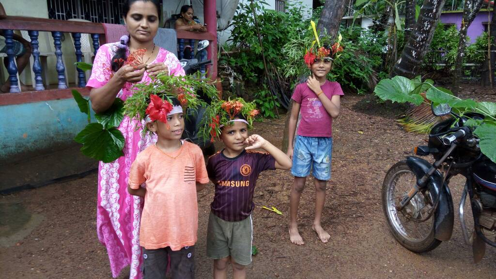
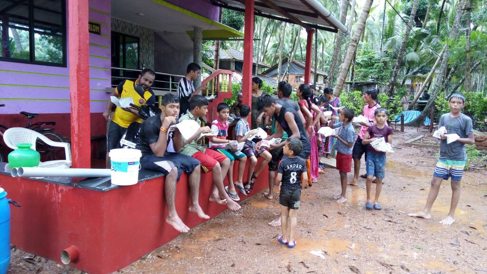
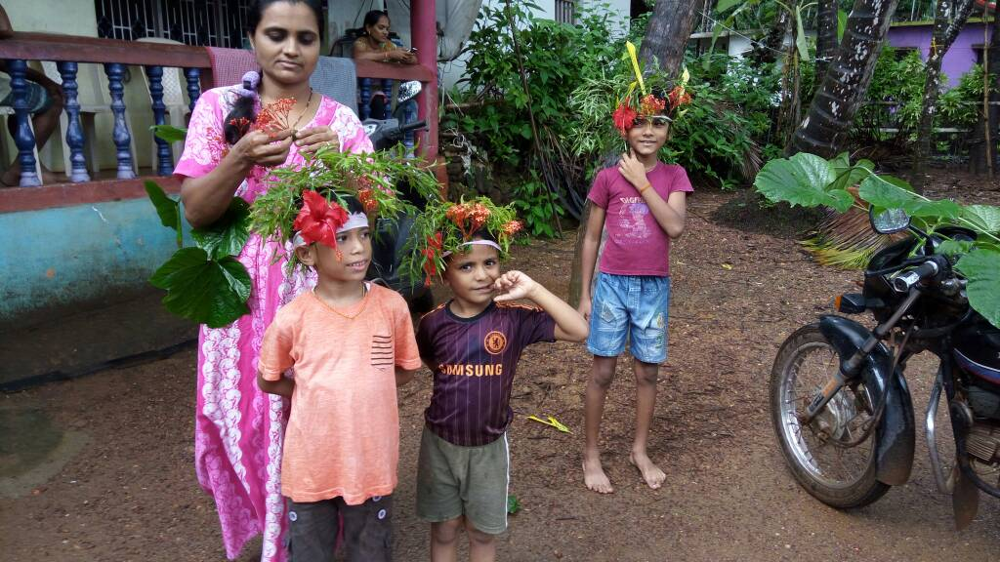
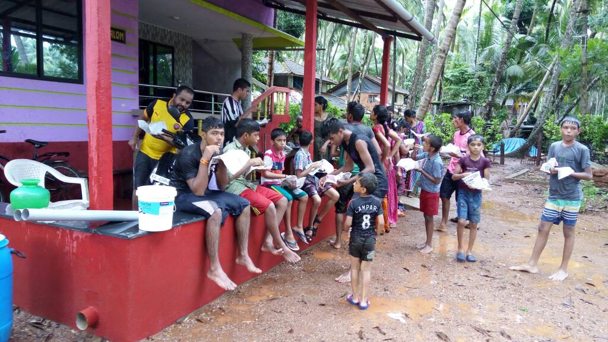
 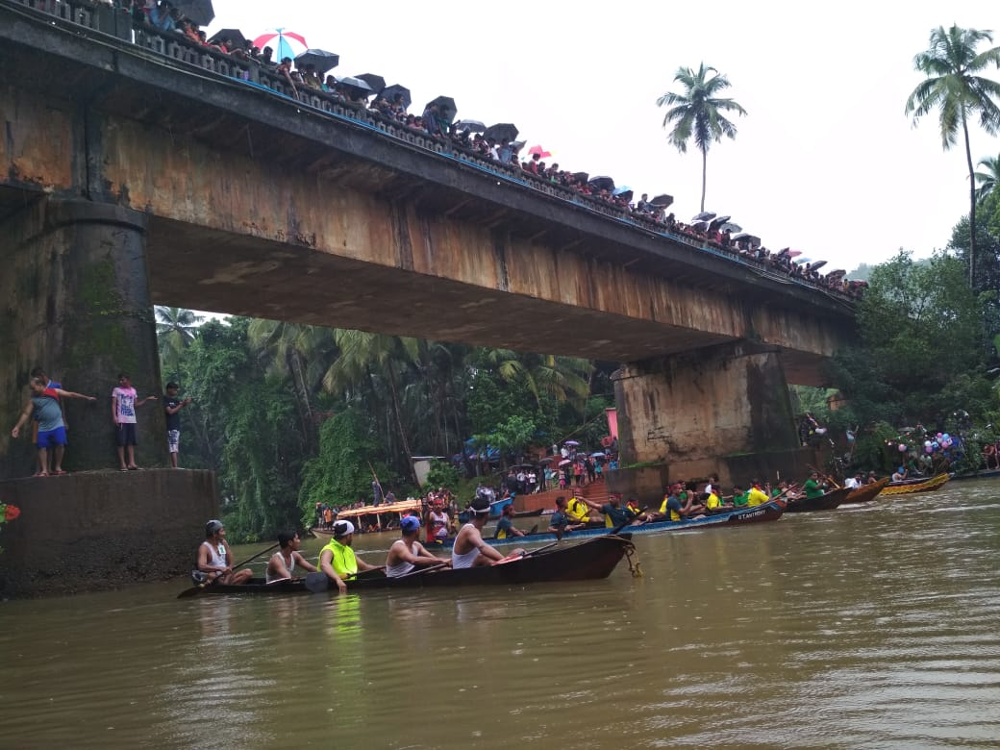
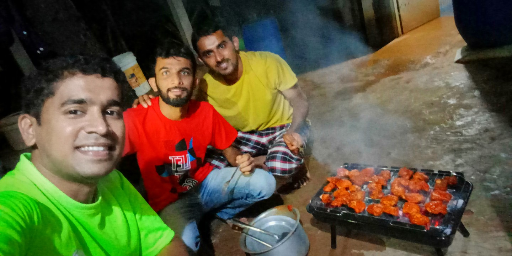
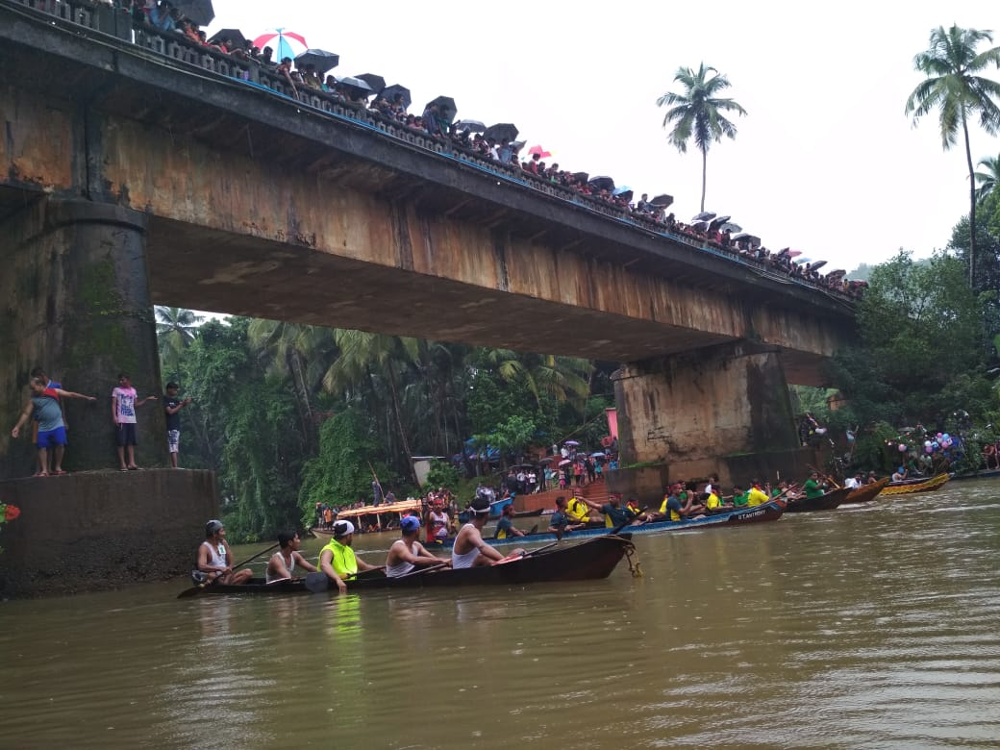
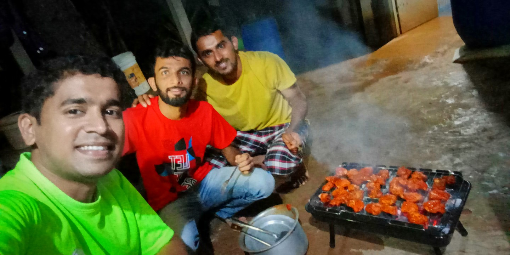

 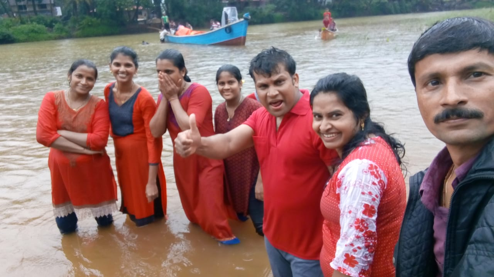
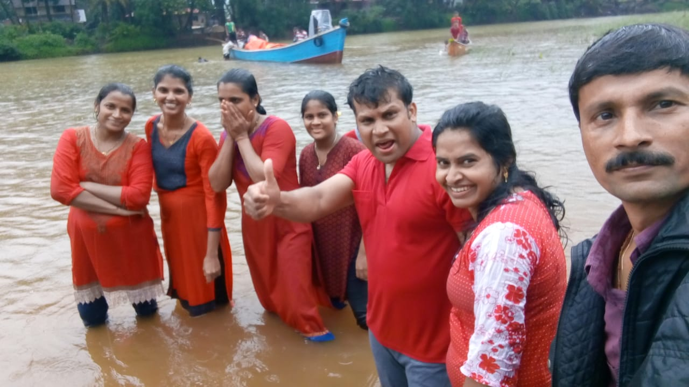
The feast of São João is a celebration of the birthday of St. John the Baptist. St. John was the son of St. Elizabeth, a relative of Mary, the mother of Jesus.The feast of São João is a celebration of the birthday of St. John the Baptist. St. John was the son of St. Elizabeth, a relative of Mary, the mother of Jesus.The feast of São João is a celebration of the birthday of St. John the Baptist. St. John was the son of St. Elizabeth, a relative of Mary, the mother of Jesus.The feast of São João is a celebration of the birthday of St. John the Baptist. St. John was the son of St. Elizabeth, a relative of Mary, the mother of Jesus.The feast of São João is a celebration of the birthday of St. John the Baptist. St. John was the son of St. Elizabeth, a relative of Mary, the mother of Jesus.The feast of São João is a celebration of the birthday of St. John the Baptist. St. John was the son of St. Elizabeth, a relative of Mary, the mother of Jesus.
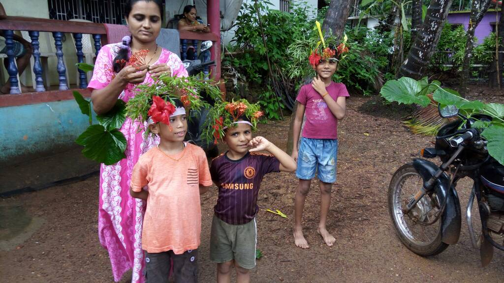
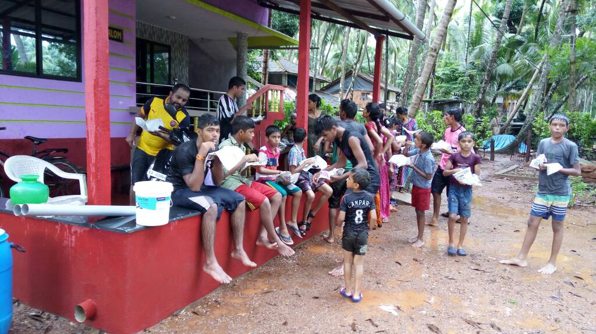
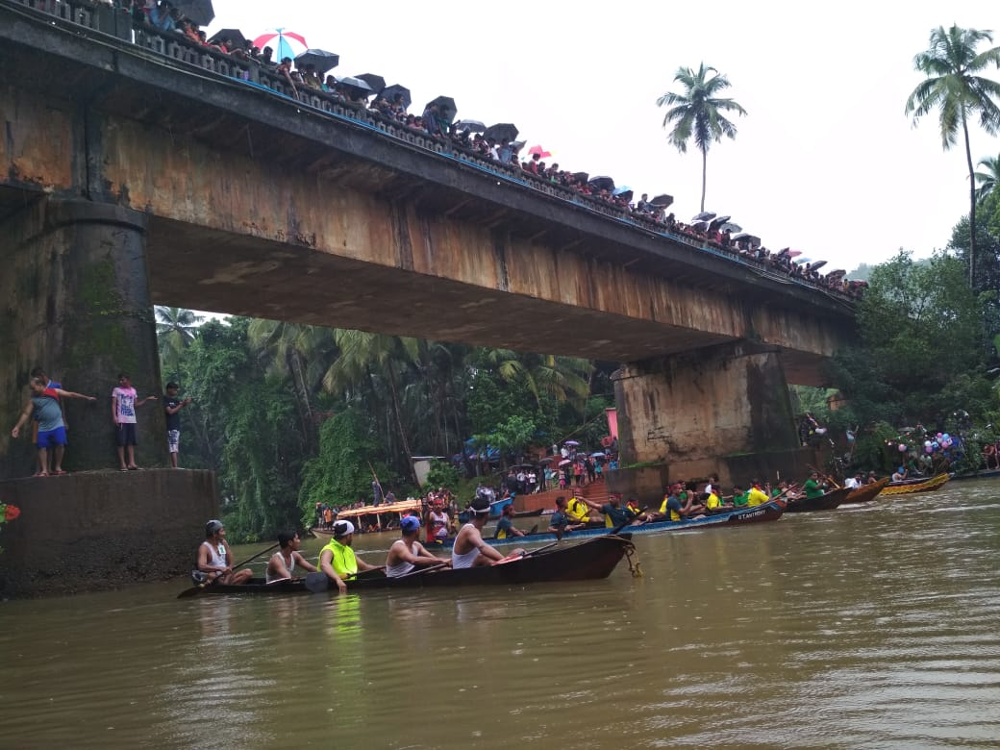
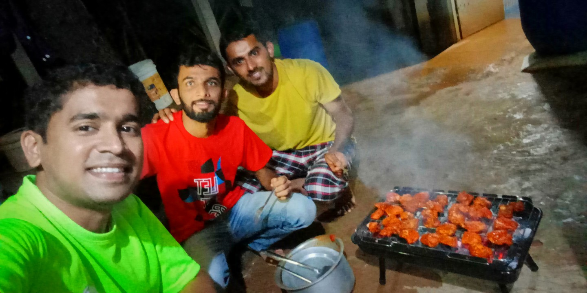
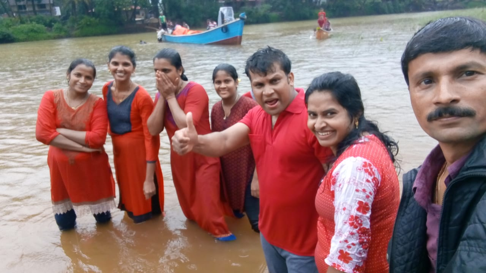